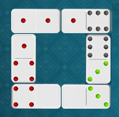

Nam có một hộp trò chơi Domino. Mỗi quân Domino là một tấm thẻ gồm 2 phần, mỗi phần có thể chứa từ 0 đến 6 dấu chấm biểu thị cho các số 0, 1, 2, 3, 4, 5, 6. Không có 2 quân domino nào giống nhau. Hộp trò chơi Domino đầy đủ có 28 quân. Tuy nhiên do thất lạc nên hộp trò chơi của Nam chỉ còn lại n quân (2 ≤ n ≤ 27). Bạn hãy giúp Nam tính thử xem có thể nối vòng n quân Domino trên được không nhé (tạo thành 1 vòng duy nhất, không rẽ nhánh). Hình dưới là một cách nối vòng 6 quân Domino.

Dữ liệu nhập:
- Dòng thứ nhất là số nguyên n (2 ≤ n ≤ 27).
- Trong n dòng tiếp theo, mỗi dòng gồm 2 số nguyên a, b (0 ≤ a, b ≤ 6) là giá trị của một quân domino. Dữ liệu cho đảm bảo không có 2 quân domino nào giống nhau.
Lưu ý: [a | b] và [b | a] là hai cách viết khác nhau của cùng 1 quân domino.
Dữ liệu xuất:
- Nếu không có cách nối vòng các quân domino in ra NO.
- Nếu có cách nối vòng các quân domino để tạo thành 1 vòng duy nhất:
+ Dòng thứ nhất in ra YES.
+ Trong n dòng tiếp theo, tại dòng thứ i in ra quân domino thứ i là hai số nguyên ai, bi cách nhau một khoảng trắng. Các quân này được in ra theo thứ tự nối vòng, nghĩa là: a2 = b1, a3 = b2, ..., an = bn-1 , a1 = bn. Nếu có nhiều đáp án, chỉ cần in ra một đáp án bất kỳ.